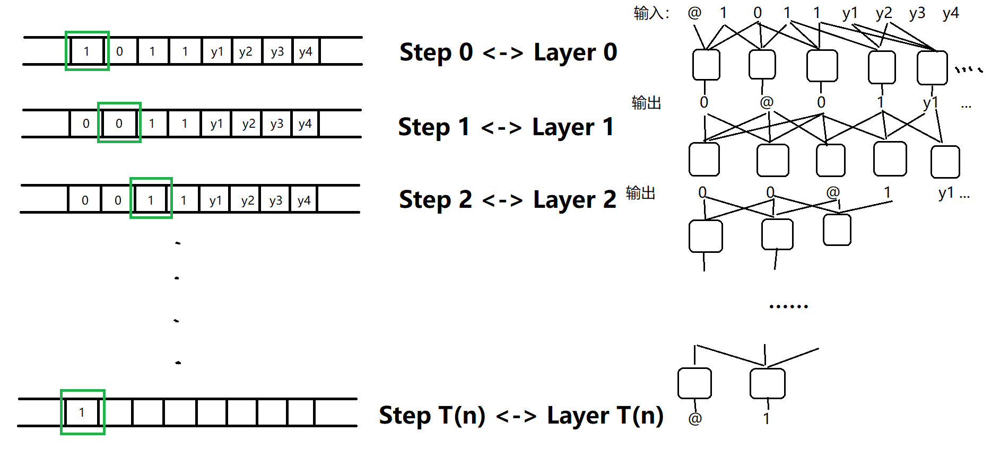

今天的又蓝又白，结果看上去灰蒙蒙的。
# HALT 的不可判定性
Theorem: 下述语言是不可判定的：
LHALT={⟨α,x⟩∣Mαhaltsoninputx}
证明：使用对角线方法（Diagonalization），即考虑M(⟨M⟩) 的情况，着手证明。
首先，考虑下列函数：
UC(x)={01ifMx(x)haltsandoutput1otherwise
那么先证明下述语言是不可判定的：
LUC={x∣UC(x)=1}
反设存在一个图灵机M 判定LUC，那么我们考虑M 在输入⟨M⟩ 上会怎样：
证毕。
这个定理我的理解其实是 “任何尝试去判定LUC 的图灵机M，都一定会存在某个输入input=⟨M⟩，使得M 不停机，故无法判断它。”
下面我们证明LHALT 的不可判定性。其实证明本质是，一旦我们可以提前得知是否停机，我们就可以判定LUC，而LUC 的不可判定性也恰恰来自于是否停机。
反设存在一个图灵机M 判定LHALT，那么我们可以构造一个图灵机M′ 去判定LUC：
- 对于输入x，使用M(⟨x,x⟩) 去判定Mx(x) 是否停机。
- 若不停机，则M′ 直接输出 1。
- 若停机，则让M′ 去模拟Mx，并输出与Mx(x) 相反的结果。
很显然，上述图灵机M′ 判定了LUC，矛盾。
故证毕。
# Cook-Levin Theorem: Boolean Circuit 的通用性
Theorem (Cook-Levin):
CIRCUIT−SAT∈NP−Complete
Proof：首先CIRCUIT−SAT∈NP 是显而易见的，所以我们证明的重点在于，∀L∈NP,L≤mpCIRCUIT−SAT。
这个定理初看非常困难，因为要证明∀L∈NP。但实际上，根据NP 问题的定义，实际上就是要证明图灵机向 Boolean Circuit 的规约。
考虑L∈NP，故存在一个判定图灵机V，使得∀x∈L,∃y,V(x,y)=1。
直观地理解，要判定x∈?L，实际上就是要知道是否存在一个y 满足V(x,y)=1，其实就对应了可满足问题是否存在一个y 满足 Circuit 的输出是 1，而这个 Circuit 就对应了V，它的输入是x,y，前者是已知的，后者是可以自由 assign 的。
我们不妨假设x=1011，看一下如何构造一个 Circuit C，使得x∈L⇔C is satisfiable.
首先，我们知道存在一个y 和图灵机V，使得V 在O(T(n)) 时间内输出V(x,y)=1。那么我们考虑V 的每一步，V 每操作一步，关键的信息就是：读写头位置 + 带子上的内容。而我们把读写头位置 + 带子上的内容编码成一个二进制串，譬如0@111 就表示，带子上内容为 “0111”，读写头指向 "@" 右侧的字符。
那么我们考虑把图灵机的每一步操作，都等价为一层的 Circuit：

其中有一个重要论断：tape 上某个单元格的内容，在一步操作后会变成什么，只和上一步该单元格附近的单元格内容和图灵机的转移函数有关。注意，其实也与读写头位置有关，但是读写头位置被编进了 tape 的内容。
注意，核心就在于 “附近”，实际上是常数个，严格来说应为 4 个。故只需要n−4=O(n) 个数的 circuit（上图中的小方块），就可以模拟单步的图灵机操作。
注意，任意的{0,1}4→{0,1}4 函数都可以用常数个 Boolean 门来模拟。如果需要 "@" 符号，可以使用替换字符集的编码技巧，在此不具体讨论。
故实际上，上右图中的 circuit 结构，只跟图灵机V 的转移函数有关，而且这个 circuit 模拟了图灵机的行为。
我们把 circuit 输入的左侧部分改为x，就可以通过 circuit 是否可满足，来判断是否存在y，使得V(x,y)=1 了。
故实际上，给定L∈NP 的一个判断图灵机V，我们就可以构造一个 circuit。然后对于输入x，将 circuit 的左侧改为x，那么此时x∈L 就等价于 circuit 的可满足性了，完毕。
显然地，circuit 的复杂性在O(T(n)2) 级别，也没有到指数复杂性。
# P=NP⇒EXP=NEXP 的证明技巧: Padding
Theorem:
P=NP⇒EXP=NEXP
Proof：假设P=NP。EXP⊆NEXP 是显然的，我们着手证明NEXP⊆EXP。
对于L∈NEXP，我们人为地构造一个语言：
Lpad={⟨x,12∣x∣k⟩∣x∈L}
其实就是对L 中的字符串，后面加一个长度为2∣x∣k，全为 1 的 padding。k 对证明不是很重要。
我们可以证明，padding 后的这个语言Lpad∈NP。假设存在一个非确定性图灵机M 去判定L。
我们构造一个图灵机M′ 去判定Lpad：
-
对于输入y，判断y 的形式是否满足y=⟨x,12∣x∣k⟩，若不是，则拒绝。
记n=∣y∣=O(2∣x∣k)，那么这一步需要的复杂度为O(poly(n))。
-
提取出x，然后去模拟非确定性图灵机M。并输出M 的结果。由于L∈NEXP，故M 所需步骤为O(poly(∣x∣)2∣x∣k)=O(poly(logn)⋅n)，对于M′ 来说，就是多项式级别。
故综上，Lpad∈NP。因为P=NP，故Lpad∈P，故存在一个确定型图灵机M∗ 判定Lpad。下面我们证明L∈EXP。
构造这样一个图灵机：
- 对于输入x，先 pad 2∣x∣k 个 1。这一步复杂度为O(2∣x∣k)。
- 模拟M∗ 去判定x。这一步复杂度也为指数级。
综上，L∈EXP。证毕